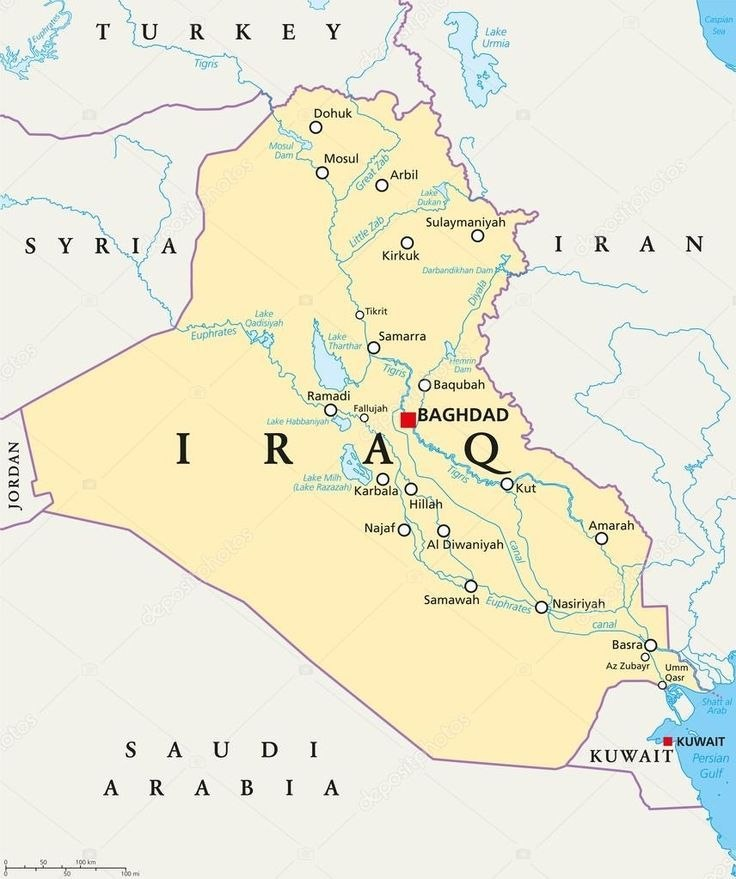
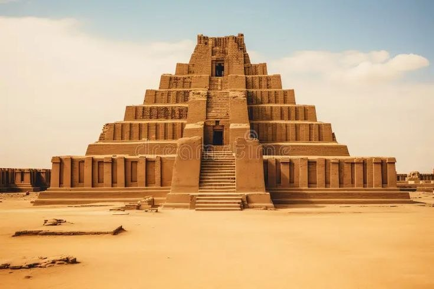
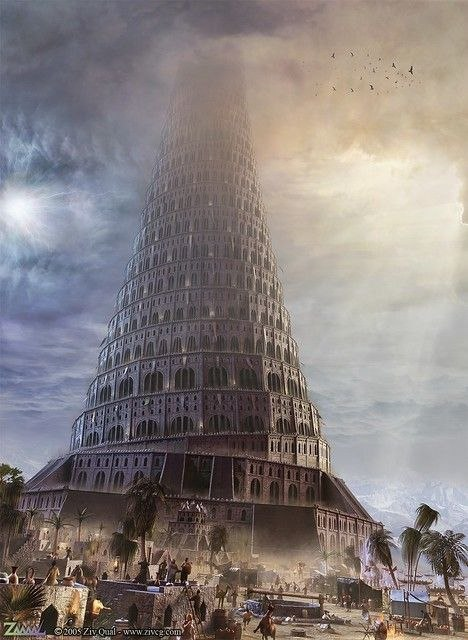

Iraq, often called the cradle of civilization, is home to numerous UNESCO World Heritage sites and ancient ruins representing Sumerian, Akkadian, Babylonian, and Assyrian history. Key sites include the ancient city of Babylon, the towering Ziggurat of Ur, the Roman-era city of Hatra, the Erbil Citadel, and the Samarra Archaeological City

